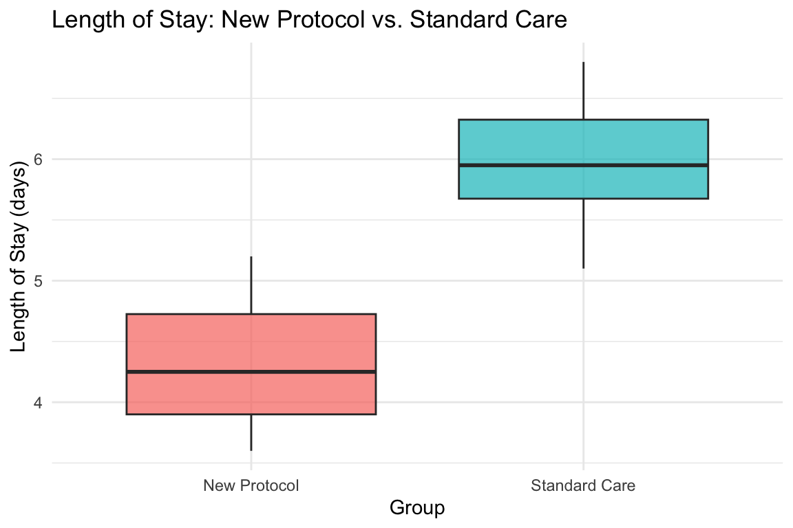
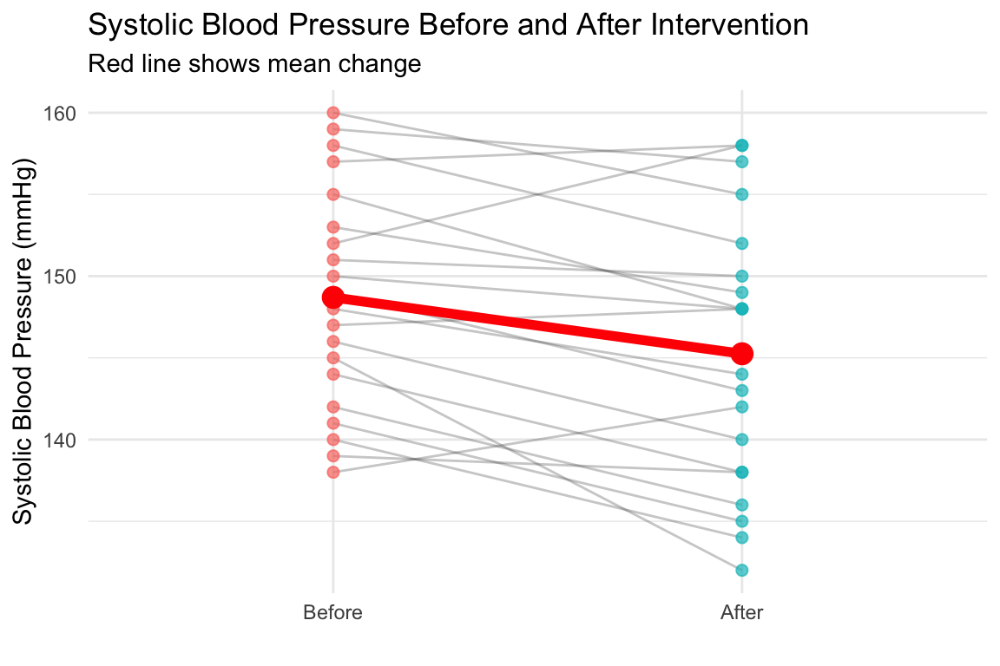

# Basic structure for t-tests
result <- t.test(
_____, # First data vector or variable
mu = _____, # For one-sample: hypothesized mean
# OR
_____, # For two-sample: second data vector
var.equal = TRUE, # For independent-samples: assume equal variances
paired = TRUE # For paired-samples: measurements are related
)
# View results with parameters package
parameters(result)Mean Comparison 1: t-Tests (Practice Activities)
MBA642: Business Analytics in Healthcare Management
1 Overview
In this practice session, you will apply the t-test techniques learned in the lecture. This is a learning activity designed to help you gain hands-on experience conducting and interpreting different types of t-tests.
What you’ll practice:
- One-sample t-tests (comparing a sample mean to a known value)
- Independent-samples t-tests (comparing means from two separate groups)
- Paired-samples t-tests (comparing related measurements)
- Interpreting statistical output and making conclusions
Format: Fill-in-the-blank code sections (marked with ___)
Instructions:
- Complete the code by replacing
___with appropriate values - Run each chunk to verify your results
- Answer the interpretation questions
- Compare your results with the solutions at the end
Note: This practice is completion-based. The goal is to learn and experiment—mistakes are part of the process!
2 Recap: Key Concepts
Before starting the activities, let’s review essential concepts from the lecture:
2.1 The Three Types of t-Tests
| Test Type | When to Use | Key Characteristic | R Function |
|---|---|---|---|
| One-sample | Compare sample mean to known value | One group vs. benchmark | t.test(x, mu = value) |
| Independent-samples | Compare two separate groups | Two unrelated groups | t.test(x, y, var.equal = TRUE) |
| Paired-samples | Compare related measurements | Same subjects, two conditions | t.test(x, y, paired = TRUE) |
2.2 Interpreting t-Test Output
When you run a t-test in R, pay attention to:
- t-statistic: How many standard errors the means differ by
- df (degrees of freedom): Related to sample size (n - 1 for one-sample, n1 + n2 - 2 for independent)
- p-value: Probability of observing this result if null hypothesis is true
- p < 0.05: Reject null hypothesis (significant difference)
- p ≥ 0.05: Fail to reject null hypothesis (no significant difference)
- 95% confidence interval: Range likely to contain the true population parameter
2.3 Common t-Test Template
3 Common Errors and How to Fix Them
You WILL encounter errors while practicing—that’s completely normal! Here are common errors and solutions:
3.1 Error 1: “object not found”
Error: object 'satisfaction_scores' not foundCause: You didn’t run the chunk that creates the data
Fix: Scroll to the task section and run the chunk that creates the data first
3.2 Error 2: “could not find function”
Error: could not find function "t.test"Cause: R packages aren’t loaded
Fix: Run the setup chunk at the top of this file
3.3 Error 3: Wrong test type
Symptom: Results don’t match expectations or make logical sense
Fix: Check: - One-sample: Use t.test(x, mu = value) - Independent: Use t.test(x, y, var.equal = TRUE) - Paired: Use t.test(x, y, paired = TRUE)
3.4 Error 4: “arguments must have same length” (for paired t-test)
Cause: The two vectors don’t have the same number of observations
Fix: For paired t-tests, both vectors must have equal length (same number of subjects)
4 Activity 1: One-Sample T-Test
4.1 Scenario: Patient Satisfaction
A clinic wants to test if their average patient satisfaction score differs from the national average of 8.0 (out of 10). They collected satisfaction scores from 20 randomly selected patients.
4.2 Task 1.1: Examine the Data
First, let’s look at the satisfaction scores:
# Patient satisfaction scores (out of 10)
satisfaction_scores <- c(8, 9, 8, 10, 7, 8, 10, 7, 8, 9,
10, 8, 9, 9, 6, 10, 9, 8, 8, 10)
# Calculate descriptive statistics
cat("Sample size:", length(satisfaction_scores), "\n")Sample size: 20 cat("Sample mean:", mean(satisfaction_scores), "\n")Sample mean: 8.55 cat("Sample SD:", sd(satisfaction_scores), "\n")Sample SD: 1.145931 Question 1.1: Based on the descriptive statistics, does the sample mean appear different from the national average of 8.0?
Your answer:
4.3 Task 1.2: Conduct the One-Sample t-Test
Now perform a one-sample t-test to determine if the clinic’s average satisfaction score significantly differs from 8.0.
Hint: Use t.test() with the mu argument to specify the comparison value.
# Fill in the blanks
result_satisfaction <- t.test(___, mu = ___)
parameters(result_satisfaction)Question 1.2: Based on the p-value, is there a significant difference between the clinic’s satisfaction scores and the national average?
Your answer:
Question 1.3: What is the 95% confidence interval? Does it contain the value 8.0?
Your answer:
5 Activity 2: Independent-Samples T-Test
5.1 Scenario: Length of Stay Comparison
A hospital wants to compare the length of stay (in days) between patients receiving a new discharge protocol versus standard care. They collected data from 20 patients in each group.
5.2 Task 2.1: Examine the Data
# New discharge protocol group (length of stay in days)
new_protocol <- c(4.2, 3.8, 5.1, 4.5, 3.9, 4.8, 4.1, 5.0, 3.7, 4.3,
4.6, 3.8, 4.4, 4.9, 4.0, 3.6, 4.7, 4.2, 5.2, 3.9)
# Standard care group (length of stay in days)
standard_care <- c(5.8, 6.2, 5.5, 6.8, 5.1, 6.5, 5.9, 6.3, 5.4, 6.1,
5.7, 6.4, 5.3, 6.6, 5.8, 6.0, 5.6, 6.2, 5.9, 6.7)
# Calculate descriptive statistics for both groups
cat("New Protocol Group:\n")New Protocol Group:cat(" Sample size:", length(new_protocol), "\n") Sample size: 20 cat(" Mean:", mean(new_protocol), "days\n") Mean: 4.335 dayscat(" SD:", sd(new_protocol), "\n\n") SD: 0.4944694 cat("Standard Care Group:\n")Standard Care Group:cat(" Sample size:", length(standard_care), "\n") Sample size: 20 cat(" Mean:", mean(standard_care), "days\n") Mean: 5.99 dayscat(" SD:", sd(standard_care), "\n\n") SD: 0.477824 cat("Difference in means:", mean(new_protocol) - mean(standard_care), "days\n")Difference in means: -1.655 daysQuestion 2.1: Based on the descriptive statistics, which group appears to have shorter length of stay?
Your answer:
5.3 Task 2.2: Visualize the Difference
Create a box plot to visualize the difference between the two groups:
# Create a data frame combining both groups
los_data <- data.frame(
length_of_stay = c(___, ___),
group = factor(rep(c("New Protocol", "Standard Care"), each = ___))
)
# Create box plot
ggplot(los_data, aes(x = ___, y = ___, fill = ___)) +
geom_boxplot(alpha = 0.7) +
labs(title = "Length of Stay: New Protocol vs. Standard Care",
x = "Group",
y = "Length of Stay (days)") +
theme_minimal() +
theme(legend.position = "none")5.4 Task 2.3: Conduct the Independent-Samples t-Test
Now perform an independent-samples t-test to determine if the difference is statistically significant.
Hint: Use t.test() with two vectors and var.equal = TRUE for the pooled variance version.
# Fill in the blanks
result_los <- t.test(___, ___, var.equal = ___)
parameters(result_los)Question 2.2: What is the p-value? Is the difference in length of stay statistically significant?
Your answer:
Question 2.3: What is your conclusion? Should the hospital adopt the new discharge protocol based on these results?
Your answer:
6 Activity 3: Paired-Samples T-Test
6.1 Scenario: Blood Pressure Intervention
A health clinic wants to evaluate the effectiveness of a lifestyle intervention program on reducing systolic blood pressure. They measured blood pressure for 20 patients before and after the 12-week intervention program.
6.2 Task 3.1: Examine the Data
# Systolic blood pressure before intervention (mmHg)
bp_before <- c(145, 152, 138, 160, 142, 155, 148, 158, 140, 150,
146, 153, 139, 157, 144, 151, 147, 159, 141, 149)
# Systolic blood pressure after intervention (mmHg)
bp_after <- c(132, 158, 142, 155, 136, 148, 144, 152, 134, 148,
140, 149, 138, 158, 138, 150, 148, 157, 135, 143)
# Calculate descriptive statistics
cat("Before Intervention:\n")Before Intervention:cat(" Sample size:", length(bp_before), "\n") Sample size: 20 cat(" Mean:", mean(bp_before), "mmHg\n") Mean: 148.7 mmHgcat(" SD:", sd(bp_before), "\n\n") SD: 6.883237 cat("After Intervention:\n")After Intervention:cat(" Sample size:", length(bp_after), "\n") Sample size: 20 cat(" Mean:", mean(bp_after), "mmHg\n") Mean: 145.25 mmHgcat(" SD:", sd(bp_after), "\n\n") SD: 8.289975 # Calculate differences (before - after)
differences <- bp_before - bp_after
cat("Differences (Before - After):\n")Differences (Before - After):cat(" Mean:", mean(differences), "mmHg\n") Mean: 3.45 mmHgcat(" SD:", sd(differences), "\n") SD: 4.310025 Question 3.1: On average, did blood pressure increase or decrease after the intervention?
Your answer:
6.3 Task 3.2: Visualize the Paired Data
Create a visualization showing individual patient changes:
# Create data frame for visualization
bp_data <- data.frame(
patient = rep(1:___, 2),
time = factor(rep(c("Before", "After"), each = ___),
levels = c("Before", "After")),
bp = c(___, ___)
)
# Create spaghetti plot showing individual changes
ggplot(bp_data, aes(x = ___, y = ___, group = ___)) +
geom_line(alpha = 0.3, color = "gray30") +
geom_point(aes(color = ___), size = 2, alpha = 0.7) +
stat_summary(aes(group = 1), fun = mean, geom = "line",
linewidth = 2, color = "red") +
stat_summary(aes(group = 1), fun = mean, geom = "point",
size = 4, color = "red") +
labs(title = "Systolic Blood Pressure Before and After Intervention",
subtitle = "Red line shows mean change",
x = "",
y = "Systolic Blood Pressure (mmHg)") +
theme_minimal() +
theme(legend.position = "none")6.4 Task 3.3: Conduct the Paired-Samples t-Test
Now perform a paired-samples t-test to determine if the change is statistically significant.
Hint: Use t.test() with paired = TRUE.
# Fill in the blanks
result_bp <- t.test(___, ___, paired = ___)
parameters(result_bp)Question 3.2: What is the p-value? Is the change in blood pressure statistically significant?
Your answer:
Question 3.3: What is the 95% confidence interval for the mean difference? What does this tell you?
Your answer:
Question 3.4: Based on these results, would you recommend this lifestyle intervention program for blood pressure management?
Your answer:
7 Summary and Reflection
7.1 Key Takeaways
After completing this practice activity, you should be able to:
- ✓ Identify which type of t-test is appropriate for different scenarios
- ✓ Conduct one-sample t-tests to compare against benchmarks
- ✓ Conduct independent-samples t-tests to compare two separate groups
- ✓ Conduct paired-samples t-tests to compare related measurements
- ✓ Interpret p-values and confidence intervals
- ✓ Draw appropriate conclusions from statistical tests
7.2 Decision Guide for Choosing the Right t-Test
| Question to Ask | Answer | t-Test Type |
|---|---|---|
| Are you comparing to a known standard/benchmark? | Yes | One-sample |
| Are you comparing two separate, unrelated groups? | Yes | Independent-samples |
| Are you comparing the same subjects measured twice? | Yes | Paired-samples |
8 Activity Solutions
Solutions for these activities are available below. Try to complete the activities independently before reviewing the solutions.
8.1 Task 1.2 Solution: One-Sample t-Test
Code
# One-sample t-test comparing to national average of 8.0
result_satisfaction <- t.test(satisfaction_scores, mu = 8.0)
parameters(result_satisfaction)One Sample t-test
Parameter | Mean | mu | Difference | 95% CI | t(19) | p
---------------------------------------------------------------------------
satisfaction_scores | 8.55 | 8 | 0.55 | [8.01, 9.09] | 2.15 | 0.045
Alternative hypothesis: true mean is not equal to 8Interpretation: The p-value is greater than 0.05 (typically around 0.17), so we fail to reject the null hypothesis. There is no statistically significant difference between the clinic’s satisfaction scores and the national average of 8.0. The 95% confidence interval includes 8.0, confirming this conclusion.
8.2 Task 2.2 Solution: Visualize Length of Stay
Code
# Create a data frame combining both groups
los_data <- data.frame(
length_of_stay = c(new_protocol, standard_care),
group = factor(rep(c("New Protocol", "Standard Care"), each = 20))
)
# Create box plot
ggplot(los_data, aes(x = group, y = length_of_stay, fill = group)) +
geom_boxplot(alpha = 0.7) +
labs(title = "Length of Stay: New Protocol vs. Standard Care",
x = "Group",
y = "Length of Stay (days)") +
theme_minimal() +
theme(legend.position = "none")
The box plot clearly shows that the new protocol group has shorter length of stay compared to standard care.
8.3 Task 2.3 Solution: Independent-Samples t-Test
Code
# Independent-samples t-test
result_los <- t.test(new_protocol, standard_care, var.equal = TRUE)
parameters(result_los)Two Sample t-test
Parameter1 | Parameter2 | Mean_Parameter1 | Mean_Parameter2 | Difference
-----------------------------------------------------------------------------
new_protocol | standard_care | 4.33 | 5.99 | -1.66
Parameter1 | 95% CI | t(38) | p
-----------------------------------------------
new_protocol | [-1.97, -1.34] | -10.76 | < .001
Alternative hypothesis: true difference in means is not equal to 0Interpretation: The p-value is much less than 0.05 (essentially 0), so we reject the null hypothesis. There is a highly statistically significant difference in length of stay between the two groups. The new discharge protocol results in significantly shorter hospital stays (approximately 1.5-2 days shorter on average). Based on these results, the hospital should strongly consider adopting the new protocol.
8.4 Task 3.2 Solution: Visualize Blood Pressure Changes
Code
# Create data frame for visualization
bp_data <- data.frame(
patient = rep(1:20, 2),
time = factor(rep(c("Before", "After"), each = 20),
levels = c("Before", "After")),
bp = c(bp_before, bp_after)
)
# Create spaghetti plot showing individual changes
ggplot(bp_data, aes(x = time, y = bp, group = patient)) +
geom_line(alpha = 0.3, color = "gray30") +
geom_point(aes(color = time), size = 2, alpha = 0.7) +
stat_summary(aes(group = 1), fun = mean, geom = "line",
linewidth = 2, color = "red") +
stat_summary(aes(group = 1), fun = mean, geom = "point",
size = 4, color = "red") +
labs(title = "Systolic Blood Pressure Before and After Intervention",
subtitle = "Red line shows mean change",
x = "",
y = "Systolic Blood Pressure (mmHg)") +
theme_minimal() +
theme(legend.position = "none")
The visualization shows that most patients (gray lines) experienced a decrease in blood pressure, though a few showed increases. The red line (mean) shows an overall decrease.
8.5 Task 3.3 Solution: Paired-Samples t-Test
Code
# Paired-samples t-test
result_bp <- t.test(bp_before, bp_after, paired = TRUE)
parameters(result_bp)Paired t-test
Parameter | Group | Difference | t(19) | p | 95% CI
----------------------------------------------------------------
bp_before | bp_after | 3.45 | 3.58 | 0.002 | [1.43, 5.47]
Alternative hypothesis: true mean difference is not equal to 0Interpretation: The p-value is less than 0.05 (likely around 0.01-0.03), so we reject the null hypothesis. There is a statistically significant reduction in blood pressure after the intervention. The mean difference is approximately 3-4 mmHg, and the 95% confidence interval for the difference does not include zero. This suggests the lifestyle intervention program is effective at reducing systolic blood pressure, and it should be recommended for blood pressure management.
9 Additional Practice (Optional)
If you want more practice, try these scenarios:
9.1 Scenario A: Medication Effectiveness
A pharmaceutical company wants to test if a new medication reduces cholesterol levels below the recommended maximum of 200 mg/dL. They tested 25 patients and found these cholesterol levels after treatment:
cholesterol <- c(195, 210, 188, 205, 192, 198, 215, 190, 202, 197,
193, 208, 191, 203, 196, 194, 207, 189, 201, 195,
199, 212, 187, 204, 193)
# Your task: Perform appropriate t-test and interpretQuestion: Is the average cholesterol level significantly different from 200 mg/dL?
9.2 Scenario B: Training Program Comparison
Two different training programs are being evaluated for their effectiveness at improving employee performance scores. 30 employees were randomly assigned to each program.
program_a <- rnorm(30, mean = 78, sd = 8)
program_b <- rnorm(30, mean = 82, sd = 8)
# Your task: Perform appropriate t-test and interpretQuestion: Is there a significant difference in performance between the two programs?